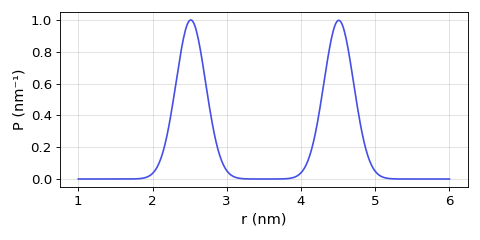

deerlab.dd_rice2#
- dd_rice2 = <deerlab.model.Model object>#
Sum of two 3D-Rice distributions model
- Parameters:
- rarray_like
Distance axis, in nanometers.
- location1scalar
1st Rician location.
- spread1scalar
1st Rician spread.
- location2scalar
2nd Rician location.
- spread2scalar
2nd Rician spread.
- amp1scalar
1st Rician amplitude.
- amp2scalar
2nd Rician amplitude.
- Returns:
- Pndarray
Distance distribution.
Notes
Parameter List
Name
Lower
Upper
Type
Frozen
Unit
Description
location11
20
nonlin
No
nm
1st Rician location
spread10.05
2.5
nonlin
No
nm
1st Rician spread
location21
20
nonlin
No
nm
2nd Rician location
spread20.05
2.5
nonlin
No
nm
2nd Rician spread
amp10
inf
linear
No
1st Rician amplitude
amp20
inf
linear
No
2nd Rician amplitude
Model

where and is the modified Bessel function of the first kind with order . This is a three-dimensional non-central chi distribution, the 3D generalization of the 2D Rice distribution.
Examples
Example of the model evaluated at the start values of the parameters:
(Source code, png, hires.png, pdf)

{kind=link}
{kind=link}